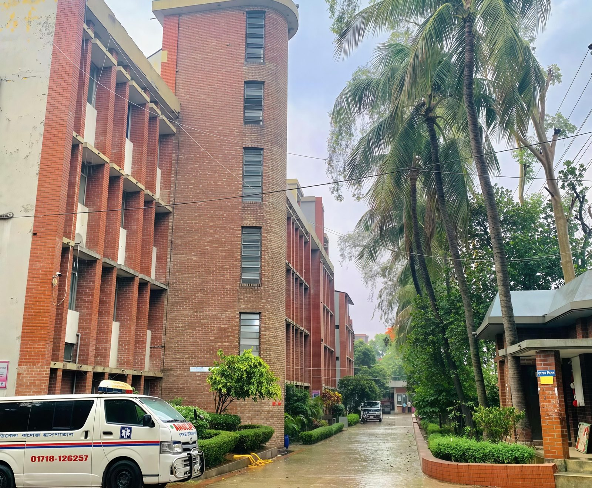

Dr Masrura Jabin
Nephrology — Associate Professor and Department Head
MBBS, FCPS (Medicine), MD (Nephrology)

Hotline: [To be confirmed]
Emergency somoy sorasori hospital e asun.
Ei site Gonoshasthaya Samaj Vittik Medical College Hospital er — rogi-sebar hospital site.
Hospital er itihas Gonoshasthaya Kendra (GK) er sathe jorito. 1971 sale Dr. Zafrullah Chowdhury ar sohokormira Melaghar, Tripura te 480-bed Bangladesh Field Hospital chaliyechilen, jekhane muktijoddha der chikitsa deoa hoyechilo. 1972 sale Savar e Gonoshasthaya Kendra ase, ar Savar Hospital GK er community-based health care er referral hospital hisebe kaj kore. Hospital ti 1972 sale protisthito, 250-bed hospital.
Gonoshasthaya Kendra er community-based sebar dhara theke Savar hospital kaj kore — sadharon manush er jonno sohoj, kom khoroche seba deoar lokkho niye.
Emergency care
General Surgery
General Medicine
Gynaecology & Obstetrics
Children's surgery
Paediatrics — children care
Ear, nose, throat
Dermatology
Ophthalmology
Bone and joint care
Anaesthesia services
Diagnostic imaging
Mental health
Nephrology — Associate Professor and Department Head
MBBS, FCPS (Medicine), MD (Nephrology)
Surgery — Associate Professor
Eye — Associate Professor
Dhap: Bibhag → Tarikh → Request → Office Confirm. Request dilei appointment nischito hobe na.
Udahoron: CBC, ESR, Peripheral Blood Film. Hospital verify koreni.
Udahoron: Blood Glucose, Creatinine, Urea, Liver Function Tests. Hospital verify koreni.
Udahoron: HBsAg, Widal. Hospital verify koreni.
Udahoron: Urine R/E, Urine C/S, Stool R/E. Hospital verify koreni.
Udahoron: X-ray, Ultrasound. Hospital verify koreni.
Udahoron: ECG, Echocardiography. Hospital verify koreni.
Round-the-clock emergency service.
2 well-equipped OT; emergency obstetric care including cesarean section.
Blood bank service.
2 ambulance ready.
Indoor facilities including burn, Ayurveda, Yoga, Acupuncture, Leprosy, PHC services.
Proti mas e 1+ specialized health camp.
Uporer seba gula Gonoshasthaya Kendra er official Health page onujayi.
Bibhag er list theke apnar somossar bibhag bachun.
Doctor directory theke chamber din o somoy dekhun — talika asar por.
Form puron korun. Request dilei appointment nischito hobe na, office confirm korbe.
Emergency somoy sorasori hospital e asun.
| Tarikh | Shironam / Pod | Vacancy | Deadline | |
|---|---|---|---|---|
| 07 Oct 2026 | Sharodiya Durga Puja — Sorkari Chuti (20–22 Oct 2026) | — | 22 Oct 2026 | — |
Thikana: Mirzanagar, via Savar Cantonment, Ashulia, Savar, Dhaka-1344
Phone: 027792225
Email: gsvmchospital@gmail.com